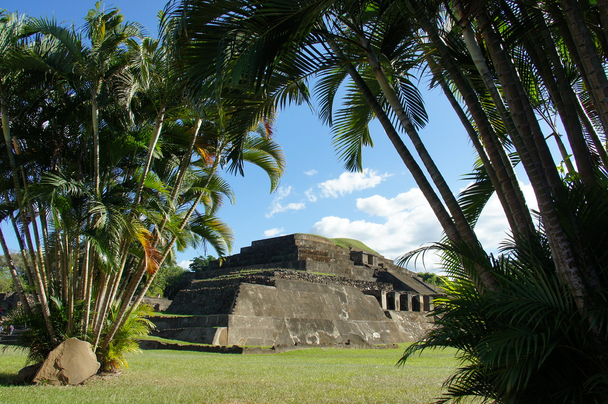
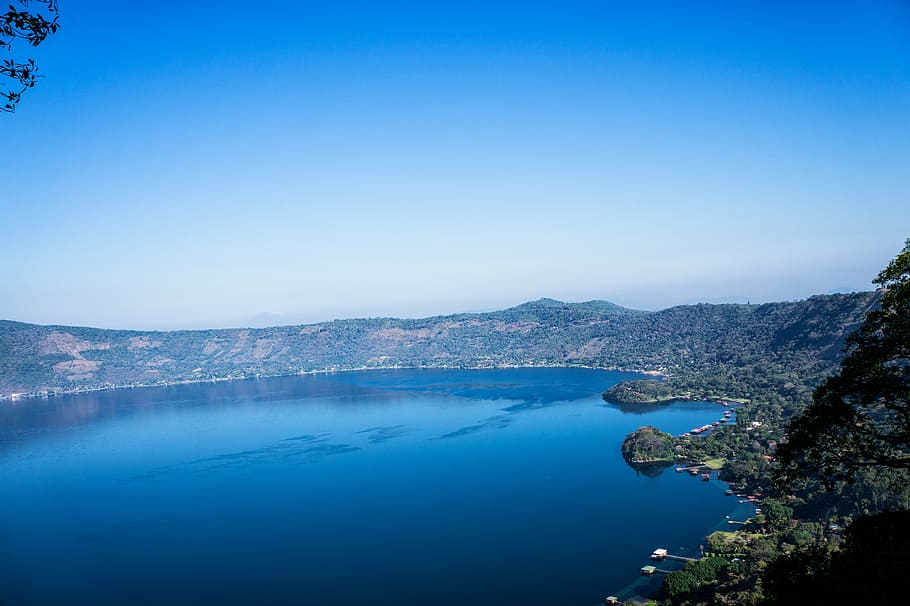
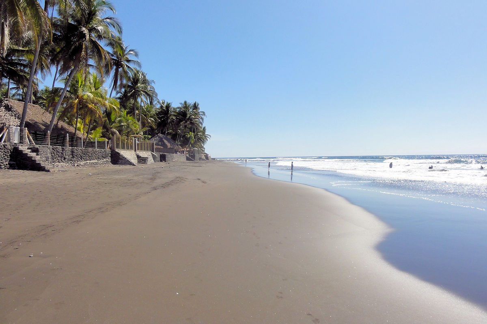
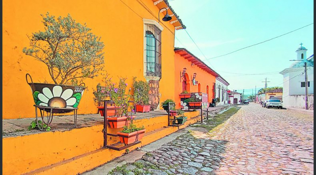
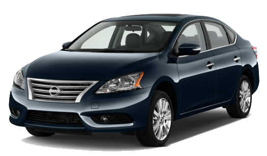
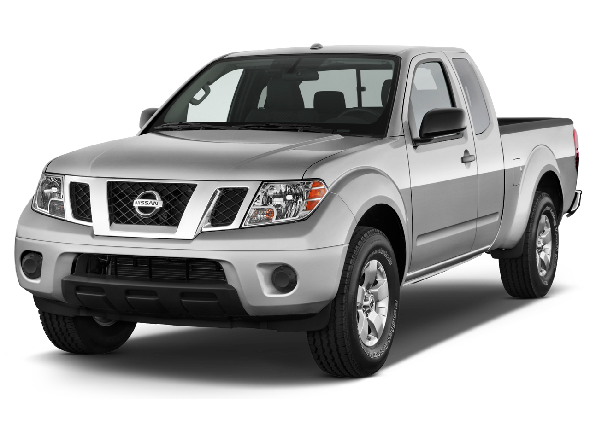

¡Tu mejor opcion en viajes!
¿Listo para comenzar tu emocionante aventura? Completa el formulario a continuación para obtener una cotización personalizada para tu viaje de ensueño. En MONTAÑA O MAR, entendemos que cada viaje es único, por lo que te pedimos proporcionar algunos detalles importantes para ofrecerte la mejor experiencia posible.
Para poder brindarte una cotizacion contactacnos:
Redes sociales¿Que lugar es el que mas te apasiona?
Sitios arqueologicos
Visitar sitios arqueológicos te permite conectar con la historia viva, admirar arquitectura impactante y comprender a fondo culturas antiguas. Resolviendo misterios históricos, apreciando el progreso humano y contribuyendo a la preservación de la historia, estos lugares inspiran y educan al tiempo que ofrecen una ventana a la diversidad cultural global.
Cerros y parques nacionales

Explorar cerros y parques nacionales te sumerge en la belleza natural, ofreciendo aire fresco, tranquilidad y una variedad de actividades al aire libre como senderismo y observación de aves. Estos lugares te conectan con la naturaleza, brindan oportunidades educativas sobre conservación, y te permiten experimentar vistas panorámicas y terrenos únicos, todo mientras contribuyes a la preservación ecológica y disfrutas de aventuras en entornos naturales.
Lagos
Explorar lagos te brinda una experiencia tranquila en la naturaleza, con oportunidades para nadar, pescar y disfrutar de deportes acuáticos. Con sus vistas panorámicas y hábitats acuáticos ricos, los lagos son ideales para la observación de aves y la vida silvestre. Además de proporcionar un escape de la vida urbana, los lagos ofrecen espacio para el turismo de aventura y momentos de relajación en familia, mientras contribuyes a la conservación de los ecosistemas acuáticos y disfrutas de la belleza y diversidad del entorno acuático.
Playas
Explorar playas te sumerge en la belleza natural del mar y la arena, con oportunidades para nadar, practicar deportes acuáticos y disfrutar de vistas impresionantes. Además de ser espacios relajantes y rejuvenecedores, las playas ofrecen un entorno único para la biodiversidad marina y la conexión con la naturaleza. Con actividades recreativas, atardeceres pintorescos y la contribución a la conciencia sobre la conservación costera, visitar playas es una experiencia enriquecedora y diversa en un entorno maravilloso.
Pueblos magicos
Explorar pueblos mágicos te sumerge en la autenticidad cultural y la historia viva. Calles empedradas, tradiciones únicas y una cálida hospitalidad te esperan. Con artesanía local, gastronomía y festivales tradicionales, estos lugares te ofrecen una experiencia auténtica y enriquecedora. Sumérgete en la historia, contribuye a la preservación del patrimonio y disfruta de la esencia de la vida local al visitar pueblos mágicos..
¿Que carro se adapta mas para tu viaje?
Descubre el Nissan Sentra 2015: Con su diseño elegante y eficiente, este sedán compacto te brinda un viaje cómodo y lleno de rendimiento. Su amplio espacio interior y eficiencia en el consumo de combustible hacen que sea ideal para cualquier aventura urbana o de carretera. Además, con tecnología avanzada como sistemas de audio y conectividad Bluetooth, estarás siempre conectado y entretenido durante tus trayectos..

Descubre la Nissan Frontier 2015: tu compañera perfecta para explorar. Diseño robusto y motores potentes te llevarán más allá. Carga amplia y remolque versátil hacen posible llevar todo lo necesario. Cabina y cama adaptables para tus preferencias. Tecnología moderna y conectividad te mantienen entretenido mientras exploras. Tracción en las cuatro ruedas y opciones todoterreno para aventuras seguras en cualquier terreno.
Para poder brindarte una cotizacion contactacnos:
Redes sociales